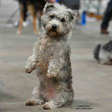

(My name goes here SCC WEB120 Portal
Welcome
Hi! Friend!
Hello!
My name is David Bonicillo. This is my 2nd quarter at Seattle Central Community College. Most recently I've come from the retail industry. I'm wanting to pivot into the tech field, in either Web Design or UX. On my off time I really like hiking, training dogs, and painting. I also enjoy driving while listening to true crime Podcasts. Crime Junkie is my favorite, and Lore.
I'm also developing an app/web site that will help keep track of your pet dog as well as help find volunteers to walk dogs in local shelters in hopes of finding a forever home.